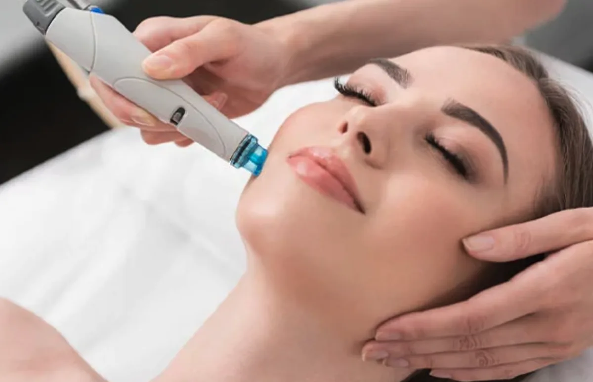
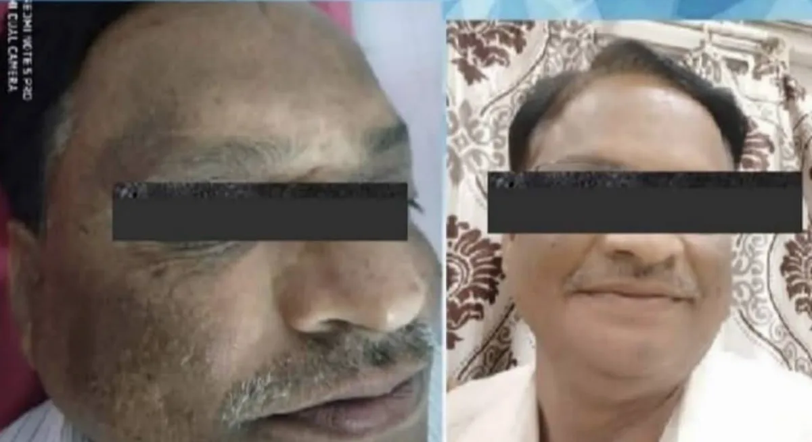
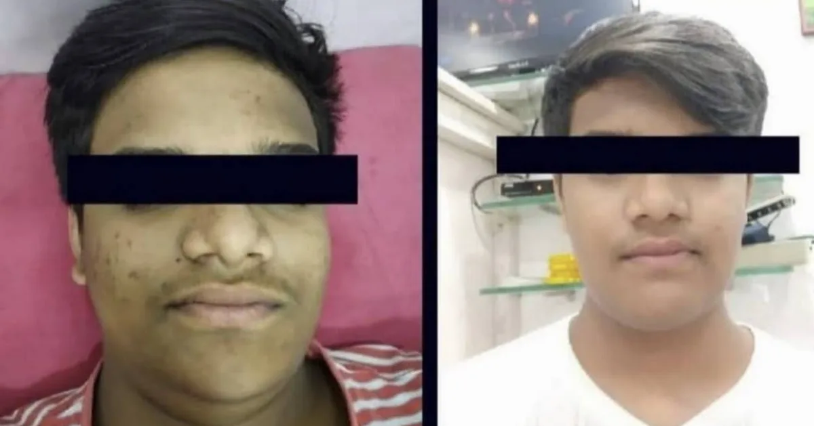
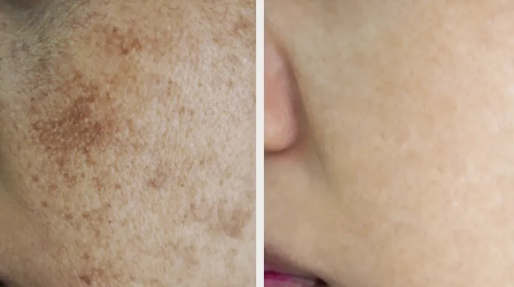
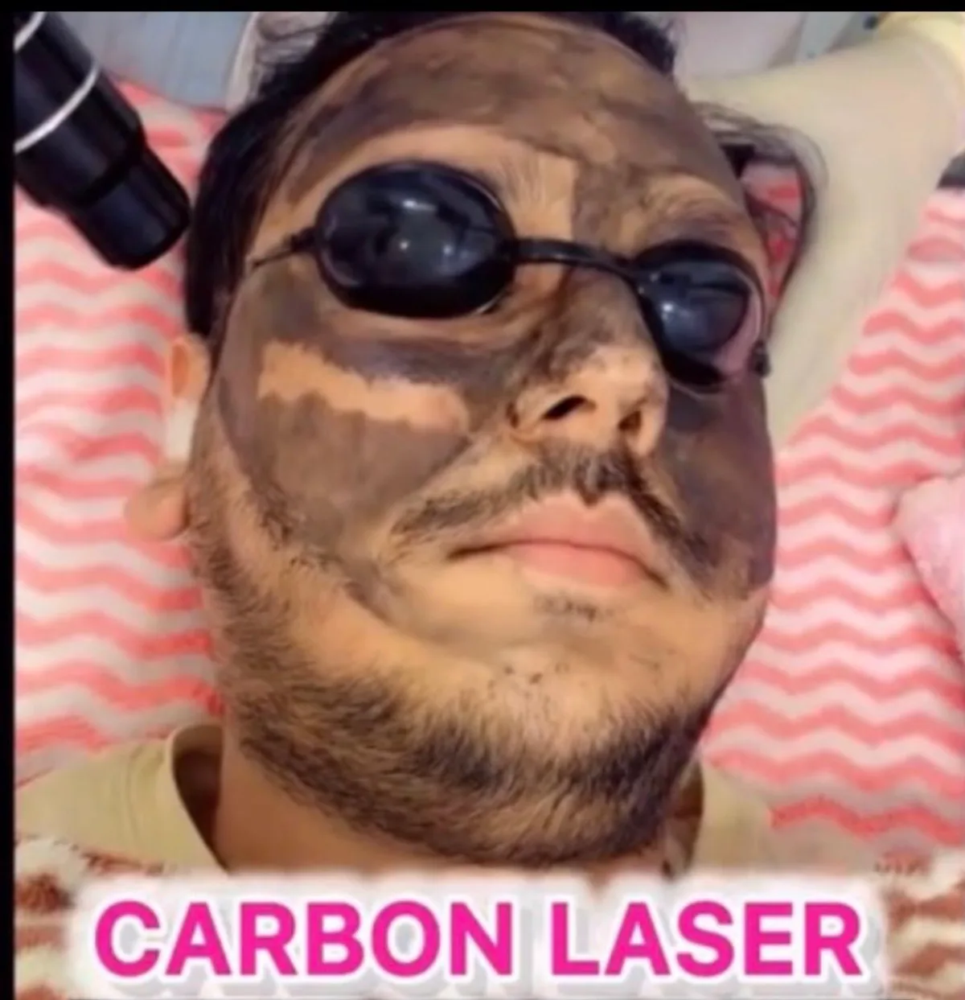
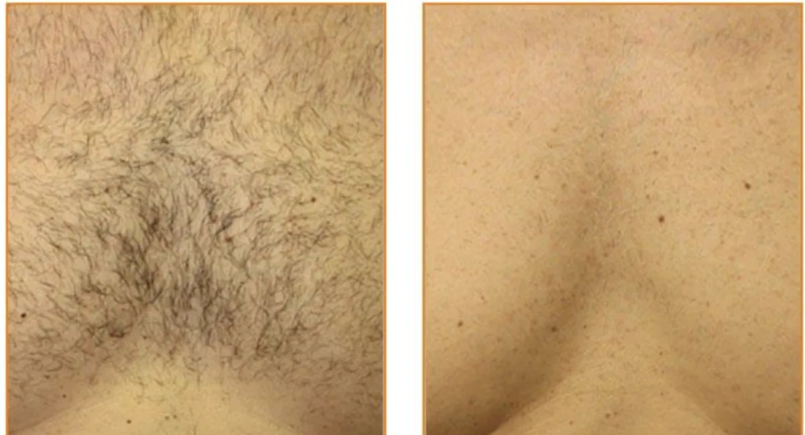
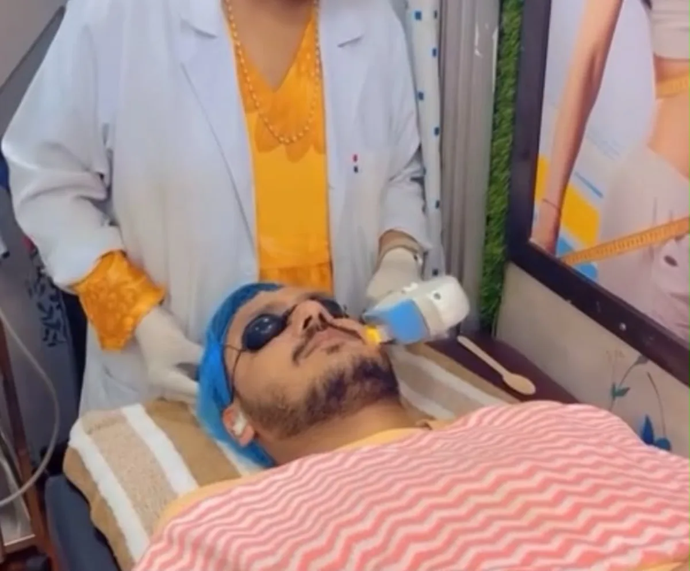
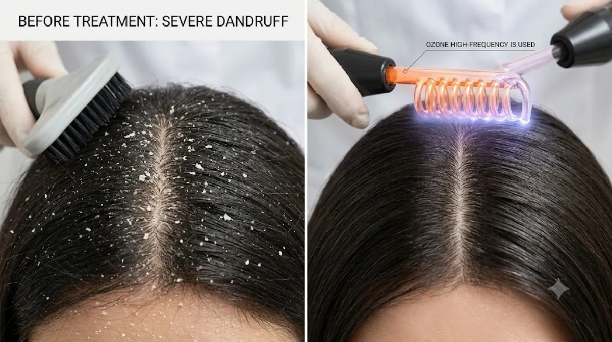
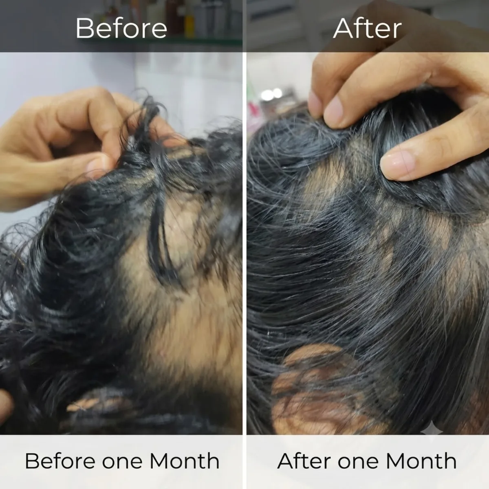

The Skin & Hair Journal
Straight answers on common skin and hair concerns — what's normal, what's worth a visit, and what to expect from treatment — written by Dr. Tupe's Clinic.
More Stories

Why Medi Facial? Types & Benefits at Dr. Tupe's Clinic
"Medi facial" isn't one treatment — it's an entire category. Here's what makes a facial medical-grade, and a full guide to every type we offer.

Pigmentation & Melasma — What Actually Works
"Pigmentation" gets used as a catch-all term, but sun-damage pigmentation and melasma respond very differently to treatment. Here's the distinction, and why it matters.

Understanding Chemical Peels — Which Strength Is Right for You?
Not all chemical peels are the same. Here's how gentle and stronger peels differ, and how to think about which one suits your skin.
Body Composition: Why the Scale Is Only Part of the Story
How body fat, visceral fat, muscle and metabolism provide a clearer starting point than weight alone.
Before a Weight-Loss Program: Tests, Measurements & Goals
A safe plan begins by looking for contributing health factors and setting measurable, realistic goals.
EMS Body Toning: What Electrical Muscle Stimulation Does
How controlled signals contract muscles, where EMS may fit, and who should avoid it.
Ultrasound Cavitation for Targeted Body Contouring
What non-surgical ultrasound body contouring can—and cannot—do for localised fat and inches.
Radiofrequency Body Tightening: Firmness After Inch Loss
How controlled radiofrequency heating supports firmer-looking skin during body contouring.
Lipolysis Injections: Candidate Areas, Results & Safety
Targeted fat-dissolving injections, expected reactions, limitations and medical screening.
Sleep, Stress & Weight: The Often-Missed Connection
Why appetite, recovery, breathing habits and regular sleep belong in a weight-management plan.
A Practical Indian Eating Pattern for Sustainable Weight Loss
Build balanced meals with protein, fibre, whole grains, vegetables and hydration—without crash dieting.

Q-Switched Laser: Pigmentation, Spots & Tattoo Ink
How very short laser pulses target selected pigment—and why colour, depth and skin type matter.

Carbon Laser Peel: What the “Hollywood Facial” Can Do
A realistic guide to the carbon mask, Q-switched laser pass, benefits, limits and aftercare.
Laser Birthmark Reduction: Types, Results & Safety
Why pigmented and vascular birthmarks need diagnosis before any laser is selected.

Laser Hair Reduction: How It Works & What to Expect
Growth cycles, multiple sessions, preparation and why “reduction” is more accurate than “permanent removal.”

IPL Photofacial for Sun Spots, Redness & Rejuvenation
What intense pulsed light treats, where it has limits, and why melasma needs caution.
Freckles: Why They Appear & When Treatment Helps
Genetics, UV exposure, sunscreen and the difference between fading freckles and preventing recurrence.
Dark Lips: Common Causes, Daily Care & Treatment Options
Why lips darken, habits that worsen pigmentation and when a dermatologist should assess them.
Hirsutism: Understanding Excess Facial Hair in Women
Hormones, PCOS, medicines, family patterns and when new hair growth needs medical evaluation.
Paradoxical Hair Growth After Laser: What Patients Should Know
A rare response in which fine hair becomes denser—and how careful settings and screening reduce risk.
Minoxidil for Hair Loss: Results, Shedding & Safe Use
What topical minoxidil can help, why early shedding may happen and when medical guidance is essential.

Dandruff & Scalp Health: Causes, Control and Warning Signs
Why dandruff recurs, how medicated shampoos help and when flaking may be another scalp condition.

PRP vs. GFC for Hair Loss: What Is the Difference?
How autologous platelet treatments are prepared, what they may improve and how expectations should be set.
More articles for this category are on the way — check back soon.
Pigmentation & Melasma — What Actually Works
"Pigmentation" gets used as a catch-all term for any dark patch on the skin — but not all pigmentation is the same, and treatments that work brilliantly for one cause can do very little for another. Here's the distinction that actually matters.
What causes pigmentation?
Pigmentation is skin that appears darker than the skin around it, caused by excess melanin production. The trigger behind that excess melanin varies — sun exposure and sun damage are leading causes, but hormonal changes, certain medications, and skin injury or inflammation can all trigger it too.
Sun-damage pigmentation vs. melasma
Selected Medi Facials may support surface brightening and hydration alongside a dermatologist-led pigmentation plan. They do not replace diagnosis, sunscreen or treatment of the underlying cause.
This is the distinction that matters most for treatment. Light-based treatments such as IPL Photofacial are genuinely effective at fading pigmentation caused by sun damage. But that same treatment is not effective on hyperpigmentation caused by hormones or certain medications — which is what melasma usually is. It's a common mix-up, since photofacials are sometimes marketed as a melasma treatment when the evidence for that is weak.
Is there a permanent cure for melasma?
Not currently. Most cases of melasma fade with time, and especially with consistent sun protection — but there's no single treatment that reliably makes it disappear for good. Melasma is best thought of as something to manage and keep under control, rather than eliminate in one sitting.
What if I have darker skin?
Light-based procedures like IPL are generally not recommended for people with darker skin tones, regardless of what's causing the pigmentation. If this applies to you, other approaches — such as targeted peels or topical routines — are usually a better starting point, and worth discussing with the doctor directly.
So what actually helps?
Daily sun protection is the single most useful thing for any type of pigmentation, regardless of cause. Beyond that, the right in-clinic treatment depends on identifying what's actually causing your pigmentation — which is exactly why this is worth an in-person assessment rather than picking a treatment off a menu.
Frequently Asked Questions
Not reliably. Photofacials are effective on pigmentation caused by sun damage, but not on pigmentation caused by hormones or medication — which is usually what melasma is.
For sun-damage pigmentation, most people need one to three sessions, with results building gradually as collagen production increases.
Some pigmentation treatments, like IPL, can also help reduce pore size and improve broken facial veins as a side benefit, alongside fading dark spots.
Not sure which type of pigmentation you have?
Message us on WhatsApp, or walk in — no appointment necessary.
Message on WhatsAppUnderstanding Chemical Peels — Which Strength Is Right for You?
"Chemical peel" covers a wide range of treatments, from very gentle to quite intensive. Here's what a peel actually does, and how the options we offer differ.
What does a chemical peel actually do?
A chemical peel uses a controlled acid solution to exfoliate the outer layer of skin, encouraging the skin underneath — smoother and more even in tone — to come through. Different acids work at different depths and speeds, which is why peels aren't one-size-fits-all.
Mandelic acid peel — the gentle option
Chemical peels may also form part of a customised Medi Facial. The acid, strength and contact time must be chosen for your skin type and concern.
Mandelic acid has a larger molecule than most other peel acids, which gives it a naturally low irritation factor — typically with only light to no visible peeling. That makes it a good starting point if you have sensitive skin or haven't had a peel before. It still meaningfully improves tone and texture, reduces the appearance of large pores, and helps loosen blackheads.
Vitamin C / citrus peel — for brightening
This peel combines concentrated Vitamin C with natural fruit acids (citric, lactic or glycolic) to exfoliate dead skin cells, fade pigmentation, and boost collagen. It's a good fit if brightening and evening out tone is your main goal.
How to choose
As a general rule: if you're newer to peels or have sensitive or acne-prone skin, start gentle. If pigmentation or dullness is your main concern and your skin tolerates actives well, a Vitamin C or citrus-based peel tends to show more visible brightening. The clinic will also factor in your skin's current condition — active breakouts, rashes or broken skin usually mean waiting until that's settled before doing any peel.
What to expect afterward
Mild redness right after treatment is normal and typically settles within a day or two. Skin usually looks noticeably fresher within 24–48 hours. Since freshly peeled skin is more sensitive to the sun, daily sun protection afterward matters more than usual.
Frequently Asked Questions
Gentler peels like mandelic acid cause little to no discomfort. You may feel some mild tingling or warmth during treatment, which settles quickly.
It depends on the peel. Gentler options like mandelic acid typically cause light to no visible peeling, while other peels may cause more noticeable flaking over the following days.
It depends on severity — this is exactly the kind of thing worth a quick in-person assessment first, since active breakouts or broken skin usually need to settle before peeling.
Not sure which peel suits your skin?
Message us on WhatsApp, or walk in — no appointment necessary.
Message on WhatsAppWhy Medi Facial? Types & Benefits at Dr. Tupe's Clinic
"Medi facial" gets used loosely, but it actually means something specific: a skin treatment built on clinically proven, science-based products and devices, rather than a standard salon facial. Here's what that means, and a full guide to the types we offer.
What makes a facial "medi-grade"?
Medi facials are skin-transformation treatments formulated to improve overall skin condition — not just a relaxing cleanse. At Dr. Tupe's Clinic, that means selecting high-quality, science-based products to revitalise, heal and refresh skin using clinically proven ingredients and high-tech devices. Depending on the treatment, that can mean combining devices like ultrasonics, meso-poration and laser with actives like vitamins, serums, chemical peels and plant extracts — matched to what your skin actually needs.
What results can you expect, and when?
Most people see healthy, hydrated skin within 24 to 48 hours of a session. The longer-term benefits — from cell regeneration — continue building over the following weeks, which is why a course of sessions tends to outperform a single one-off visit.
General benefits of Medi Facials
- Gives radiant, glowing skin
- Reduces blemishes and pigmentation
- Reduces the appearance of open pores
- Tightens skin
- Reduces fine lines and signs of ageing
Types of Medi Facial at Dr. Tupe's Clinic
There's a wide range, each suited to a different concern. Here's a guide grouped by what each one is best at.
Deep-cleansing & exfoliating
HydraFacial — a gentle, multi-step treatment (cleansing, exfoliation, extraction, nourishing serums) suitable for every skin type and tone.
Diamond / Skin Polishing Facial — exfoliates and detoxifies using diamond-dust microdermabrasion for firmer, brighter skin.
Korean Glass Facial — a multi-step K-beauty treatment (double cleanse, enzyme peel, microdermabrasion, LED, hydrating mask) finished with a hand massage, taking 45 minutes to an hour.
Derma Planing Facial — uses a fine surgical blade for deep exfoliation, removing roughly three weeks' worth of dead skin cells in one session with zero downtime.
Micro Derma Peel Facial — physical exfoliation that manually removes dead surface cells for a more even, brighter, smoother complexion.
Brightening & pigmentation
OxyGeno Facial — a 3-in-1 treatment (Tripolar RF for tightening, oxygenation for whitening and exfoliation, ultrasound for serum penetration). Not suitable during pregnancy or with active acne, eczema, rosacea or sunburned/injured skin.
Vit. C / Citrus Peel Medi Facial — concentrated Vitamin C and fruit acids to fade dark spots and brighten tone.
Carbon Laser / Hollywood Facial — liquid carbon plus laser to lift out impurities, brighten complexion and clear blackheads.
Advanced Skin Whitening Peel Facial — targets dark spots and uneven tone, also helping soften the appearance of acne scars.
Anti-ageing & firming
Radiofrequency / Anti-Aging Facial — RF energy activates collagen, adding volume and softening lines while hydrating dehydrated skin.
Vampire / PRP Facial — microneedling combined with your own Platelet-Rich Plasma to stimulate collagen regrowth and tighten skin.
Omega LED Light Facial — medical-grade LED wavelengths for anti-ageing, anti-acne and overall revitalisation.
Meso Magic Facial (Mesotherapy) — a high concentration of vitamins and serums delivered to refresh the skin, reduce signs of ageing, brighten tone and boost hydration.
Collagen Facial — supports the skin's own collagen, which naturally declines with age (alongside genetics, hormones, environmental exposure and stress) — improving hydration, texture and firmness while shrinking the appearance of open pores.
Acne & scarring
Acne Laser Facial — IPL light pulses that target the underlying causes of acne; best for oily, acne-prone or congested skin.
Acne Scar Peel Medifacial — an intensive regeneration treatment that activates skin cell repair and increases collagen and elastin.
Mandelic Peel Medi Facial — a gentle peel (large molecule, low irritation) ideal for acne-prone or sensitive skin, with only light to no visible peeling.
Pumpkin Peel Facial — natural fruit enzymes plus Vitamins A, C and E exfoliate gently while zinc and potassium calm redness; good against dryness, ageing and acne.
Specialty & combination treatments
IPL Photo Facial — pulses of intense light restore skin over a roughly half-hour session, reducing pigmentation and large pores while stimulating collagen.
Ozone High Frequency Facial — increases oxygen to the skin to improve texture, tone and glow, and to help treat acne, while aiding lymphatic drainage.
Fire & Ice Facial / Red Carpet Facial — a two-mask treatment: one smooths and resurfaces via heat, the other hydrates and nurtures via cooling — for smoother, firmer, more even-toned skin.
Laser Resurfacing / Rejuvenating Facial — improves uneven skin tone, forehead wrinkles, sagging and thinning skin, and can help with chickenpox scars, pigmentation and acne scars.
Aftercare: Do's and Don'ts
Getting the most out of a medi facial has as much to do with aftercare as the session itself.
- Do stay hydrated
- Do cleanse gently
- Do use sun protection
- Do follow the dermatologist's advice
- Do go for maintenance treatments as recommended
- Don't visit a steam room or sauna right after
- Don't wax, shave or indulge in the treated area
- Don't pick at the skin
- Don't apply heavy makeup
Frequently Asked Questions
No — medi facials use clinically proven, science-based products and devices (like ultrasonics, meso-poration or laser) chosen for your specific skin condition, rather than a standard relaxation-focused facial.
Most people notice healthy, hydrated skin within 24–48 hours. Longer-term benefits build over the following weeks as the skin regenerates.
It depends on your main concern — brightening, acne, ageing or deep cleansing all point toward different options. See our guide to choosing a facial, or message us and we'll help you pick.
It's best to avoid heavy makeup immediately afterward, along with steam, sauna, waxing, shaving or picking at the treated skin.
Not sure which medi facial fits your skin?
Message us on WhatsApp, or walk in — no appointment necessary.
Message on WhatsAppWhich Facial Is Right for You? A Guide to Our Treatments
HydraFacial, Photo Facial, Vampire Facial, Korean Glass Facial — it's a lot of options, and they're not interchangeable. Here's a quick guide, grouped by what you're actually trying to fix.
For hydration & sensitive skin
HydraFacial is a gentle, multi-step treatment — cleansing, exfoliation, extraction and hydrating serums — that's customised to your skin type and suitable for pretty much every skin type and tone.
For pigmentation & sun damage
Photo Facial (IPL) targets discolouration, fine lines and large pores using pulses of light, working best on pigmentation caused by sun exposure specifically.
For dullness & congestion
OxyGeno Facial combines RF, oxygenation and ultrasound to brighten and tighten in one session, while Carbon Laser (Hollywood) Facial uses a liquid-carbon-and-laser combination to deep-clean pores and clear blackheads.
·
For anti-ageing & firmness
Radiofrequency / Anti-aging Facial uses RF energy to activate collagen and soften lines, while Vampire Facial pairs microneedling with PRP to stimulate collagen regrowth for a firmer, more youthful look.
·
For active breakouts
Acne Laser Facial uses pulses of light to target the underlying causes of acne — blackheads, whiteheads and pustular breakouts — and is best suited to oily, congested skin.
For brightening
Vit. C / Citrus Peel Medi Facial is concentrated on fading dark spots and boosting radiance, while Korean Glass Facial is a multi-step, K-beauty inspired treatment finished with a hand massage for that glass-skin glow.
·
Still not sure?
That's normal — with this many options, the fastest way to find the right fit is a quick conversation with the doctor about what's actually bothering you, rather than guessing from a menu.
Not sure which facial fits your skin?
Message us on WhatsApp, or walk in — no appointment necessary.
Message on WhatsAppWhy Is My Hair Falling Out? Understanding the Causes
Hair loss is rarely just one thing — and it's most often temporary. Whether hair is lost entirely or just thinning, it can usually be expected to grow back once the underlying cause is addressed. Here's a guide to what's commonly behind it.
Genetics & hormones
Androgenetic (hereditary) alopecia is one of the most common causes — high levels of DHT in the hair follicles shorten hair's natural growth cycle over time. Hormonal shifts around pregnancy and menopause can also trigger noticeable shedding, as can hair loss linked to ageing scalp cells more generally.
Stress & life events
Telogen effluvium happens when a larger-than-usual number of hairs shift into their resting phase at once — often triggered by childbirth, surgery, rapid weight loss, thyroid conditions, or day-to-day stress. Alopecia areata is an autoimmune condition that can cause sudden patchy hair loss, often linked to major stress such as work pressure, exams or big life changes.
Styling & hair care habits
Traction alopecia comes from hairstyles that pull on the hair repeatedly — tight buns, braids, cornrows or extensions. Frequent hair colouring, and rubbing or scratching an itchy scalp repeatedly, can also damage hair follicles over time.
Medications & underlying health conditions
A number of medications list hair loss as a side effect, including some acne treatments, antifungals, antidepressants, beta blockers, cholesterol-lowering drugs, thyroid medication, and birth control pills. Certain health conditions matter too — scalp psoriasis, digestive system issues, and nutritional deficiencies (particularly vitamin B12, vitamin C, iron, magnesium and vitamin D) can all contribute to shedding.
Scalp infections & inflammation
Fungal infections of the scalp (ringworm/tinea capitis) are a recognised cause of hair loss — and it's worth knowing that dandruff itself is usually a result of an oily scalp, not a fungal infection. Inflammation from folliculitis, sunburn, rashes or wounds can also affect nearby follicles.
The good news
Most hair loss is temporary. Once the underlying cause — whether it's stress, a medication, a nutritional gap or a scalp condition — is identified and addressed, hair can usually be expected to grow back. That's why getting an actual diagnosis matters more than guessing at a cause.
Frequently Asked Questions
Not usually — dandruff is typically a result of an oily scalp, distinct from a fungal infection like ringworm (tinea capitis), which is a separate cause of hair loss.
In most cases, yes — hair loss is most often temporary, and once the underlying cause is treated, regrowth is the expected outcome.
Yes — this is called traction alopecia, caused by repeated pulling from tight buns, braids, cornrows or extensions over time.
Since hair loss has so many possible causes — hormonal, nutritional, autoimmune, medication-related — getting an actual diagnosis first makes any treatment, including supplements, far more likely to work.
Noticing more hair fall than usual?
Message us on WhatsApp, or walk in — no appointment necessary.
Message on WhatsAppBody Composition: Why the Scale Is Only Part of the Story
Two people can weigh the same yet have very different proportions of fat, muscle, water and bone. That is why a useful slimming assessment looks beyond kilograms.
What body-composition analysis measures
A body-composition analyser can estimate body-fat percentage, visceral-fat level, skeletal muscle, resting metabolism, BMI and metabolic body age. Repeating measurements under similar conditions helps show whether a plan is reducing fat while preserving muscle.
Why visceral fat matters
Visceral fat sits around internal organs and carries greater health relevance than the fat you can pinch under the skin. A high reading should prompt a broader medical and lifestyle assessment—not a promise of spot reduction.
Use trends, not one reading
Hydration, meals and recent exercise can shift readings. The most helpful approach is to compare trends alongside waist circumference, strength, energy, sleep and laboratory results.
Start with a measurable baseline
Book a consultation for a personalised body-composition and weight-management assessment.
Message on WhatsAppBefore a Weight-Loss Program: Tests, Measurements & Goals
Weight gain is not always explained by willpower. A medical starting point helps identify factors that may affect appetite, energy, metabolism or treatment safety.
What an assessment may include
Your clinician may review symptoms, medicines, sleep, menstrual or hormonal history, eating patterns and activity. Depending on your history, blood tests may include thyroid, glucose, lipid, liver, kidney, iron, vitamin B12 or vitamin D markers. Tests should be ordered for a clinical reason rather than as a one-size-fits-all package.
Measure more than weight
Body composition, waist circumference and blood-pressure trends add context. Together they help create goals such as improving metabolic health, reducing waist size, preserving muscle and building habits that can be maintained.
Set realistic expectations
Healthy fat loss is gradual. Procedures may complement nutrition and movement for selected areas, but they are not substitutes for treating an underlying condition or maintaining a sustainable energy balance.
EMS Body Toning: What Electrical Muscle Stimulation Does
Electrical muscle stimulation, or EMS, sends controlled signals through pads placed over selected muscles, causing repeated contractions and relaxation.
Where EMS may fit
In a supervised body-contouring program, EMS may support muscle activation and a firmer appearance around areas such as the abdomen, thighs or buttocks. It should be viewed as an adjunct—not a replacement for resistance exercise or a standalone cure for obesity.
What a session feels like
Patients generally feel rhythmic tingling and muscle contractions. Pad placement and intensity are adjusted for comfort and the target muscle group.
Who should avoid EMS?
EMS is not appropriate for everyone. Pregnancy, a cardiac pacemaker or implanted electronic device, metal in the treatment area, active fever or infection, reduced sensation, significant swelling and some vascular or medical conditions require avoidance or medical clearance. Always disclose your full health history.
Ultrasound Cavitation for Targeted Body Contouring
Ultrasound cavitation is a non-surgical body-contouring option used on localised, pinchable fat. It is designed for shaping—not major weight loss.
Common treatment areas
The abdomen, flanks, hips, thighs and upper arms are commonly discussed. Suitability depends on the amount and type of fat, skin quality and the clinician's assessment.
What it can realistically do
Some patients notice a change in circumference or contour over a course of sessions. Results vary, and claims of guaranteed kilograms or centimetres after one sitting should be treated cautiously. Nutrition, activity and stable weight affect how long changes remain visible.
Safety screening matters
Pregnancy, a pacemaker or metal implant near the area, active cancer, serious liver or kidney disease, blood-thinning medicines and recent surgery may make treatment unsuitable. This is why consultation must come before a session.
Radiofrequency Body Tightening: Firmness After Inch Loss
Radiofrequency (RF) body treatments use controlled energy to warm deeper tissue while the skin surface is monitored.
Why RF is paired with contouring
When circumference changes, skin laxity may become more noticeable. RF is used to support collagen remodelling and a firmer-looking surface, and may be combined with other body-contouring approaches after assessment.
What to expect
A session typically feels warm rather than painful. Results build gradually and vary with age, skin elasticity, treatment settings and the number of sessions. RF cannot remove large amounts of fat or replace surgery for significant loose skin.
Aftercare
Follow the clinic's hydration and skin-care advice and report persistent pain, blistering or unusual swelling. Implanted devices, pregnancy and certain medical conditions need careful screening.
Lipolysis Injections: Candidate Areas, Results & Safety
Injection lipolysis is a medical procedure intended to reduce small, localised pockets of fat. It is not a general weight-loss injection and must be prescribed and performed by a qualified clinician.
Areas commonly assessed
Depending on the approved product and clinical judgement, areas such as the double chin or selected small body-fat pockets may be considered. Product approval and evidence differ by treatment area, so ask exactly what is being used and whether that use is approved.
Expected reactions
Temporary swelling, tenderness, bruising, redness, numbness or stinging can occur. Changes take time as the inflammatory response settles; multiple sessions may be needed.
Who may not be suitable?
Pregnancy, breastfeeding, active infection, significant liver or kidney disease, some autoimmune or skin conditions, and poor skin tone may make treatment unsuitable. Rare but important complications are possible, particularly around the jaw, so anatomy and technique matter.
Sleep, Stress & Weight: The Often-Missed Connection
Food and movement matter, but a sustainable plan also needs recovery. Too little sleep can make hunger, cravings and consistent exercise harder to manage.
Sleep and appetite
Sleep restriction can affect glucose regulation and appetite-related hormones. Most adults benefit from at least seven hours, with a regular sleep and wake time. Sleep does not directly “burn fat,” but adequate rest supports better decisions and recovery.
Stress changes behaviour
Stress can disrupt sleep, encourage comfort eating and reduce activity. A daily decompression habit—walking, meditation, journaling or slow breathing—can help interrupt that cycle.
Try gentle paced breathing
Breathe comfortably into the abdomen, in through the nose and out slowly without forcing a very deep breath. The popular 4-7-8 pattern may feel calming for some people, but anyone who becomes dizzy should return to normal breathing.
A Practical Indian Eating Pattern for Sustainable Weight Loss
You do not need to eliminate rice, roti or every favourite food. The goal is a repeatable eating pattern that controls portions while supplying protein, fibre and micronutrients.
Build the plate
Start with plenty of vegetables or salad, add a protein source such as dal, beans, eggs, fish, chicken, tofu, curd or paneer, then include a measured portion of roti, brown rice, oats, poha or another whole-grain carbohydrate. Choose fruit, roasted makhana, sprouts, curd or a small portion of nuts for snacks.
Protein and fibre improve fullness
Spread protein across meals and choose colourful vegetables, fruit and whole grains. Water is the default drink; sugary beverages and frequent ultra-processed snacks add calories without much fullness.
Avoid extreme detox rules
Juice-only or very-low-calorie “detox days” are unnecessary for most people and can cause weakness. A clinician or dietitian should personalise intake for diabetes, kidney disease, pregnancy, eating-disorder history or other medical needs.
Need a plan that fits your routine?
Ask about a clinician-guided slimming and nutrition consultation.
Message on WhatsAppQ-Switched Laser: Pigmentation, Spots & Tattoo Ink
A Q-switched laser releases high-energy light in extremely short pulses. Selected pigment absorbs that energy and breaks into smaller particles that the body gradually clears.
What can it treat?
Depending on wavelength, diagnosis and skin type, Q-switched systems may be used for selected freckles, sun spots, dermal pigmentation and tattoo ink. It is not one universal treatment: black tattoo ink responds differently from green, blue, red or yellow, and superficial pigment behaves differently from deeper pigment.
What happens during treatment?
Protective eyewear is required. The pulse can feel like small snaps against the skin. Temporary whitening, redness, swelling, crusting or darkening may follow. Multiple sessions are common because ink and pigment exist at different depths and the skin needs time to recover.
Important limitations
Melasma and darker skin tones require particular caution because heat or inflammation can worsen pigmentation. A patch test, conservative settings and strict sun protection may be recommended. Do not pick crusts; follow the clinic's cleansing and sunscreen instructions.
Is Q-switched laser right for your pigmentation?
Start with a dermatologist's diagnosis rather than choosing a laser by name.
Message on WhatsAppCarbon Laser Peel: What the “Hollywood Facial” Can Do
A carbon laser peel is a superficial, non-invasive treatment in which a thin carbon lotion is applied and then passed over with a suitable laser.
How the treatment works
The carbon settles over the skin and within surface pores. Laser energy is absorbed by the carbon, producing a controlled photoacoustic effect that removes the lotion with surface debris and supports gentle exfoliation.
Potential benefits
The treatment may temporarily improve oiliness, congested-looking pores, blackheads, dullness and mild textural irregularity. Heat generated during treatment may also support collagen activity over time. It is not a substitute for medical acne treatment, deep scar resurfacing or a tailored melasma plan.
Aftercare and expectations
Mild redness or tingling may occur. Use gentle cleanser, moisturiser and broad-spectrum sunscreen, and avoid scrubs or irritating actives until the skin feels normal. Results and the number of sessions vary; no procedure can guarantee a fixed degree of pore closure or pigmentation clearance.
Laser Birthmark Reduction: Types, Results & Safety
“Birthmark” describes several very different conditions. Some are caused by extra pigment; others come from abnormal or enlarged blood vessels. Correct diagnosis determines whether laser is appropriate.
Pigmented versus vascular birthmarks
Q-switched or other pigment-targeting lasers may be considered for selected pigmented lesions. Vascular birthmarks require light that targets haemoglobin instead. A dermatologist must first rule out lesions that should be monitored, biopsied or managed another way.
Can a birthmark be removed completely?
Laser often aims to lighten colour and reduce visibility rather than promise complete or permanent removal. Response depends on type, depth, colour, location and skin tone. Some marks recur or darken after treatment, and multiple sessions may be needed.
Recovery and warning signs
Temporary redness, swelling, bruising, crusting or colour change can occur. Careful sun protection is essential. Seek review for blistering, infection, worsening pain or unexpected colour change, and never treat a changing or suspicious lesion purely for cosmetic reasons without medical assessment.
Laser Hair Reduction: How It Works & What to Expect
Laser and intense pulsed light devices target melanin in the hair shaft and follicle. Heat damages actively growing follicles so future hair becomes slower, finer or less dense.
Why several sessions are needed
Only a proportion of hair is in the active growth phase at one time. Treatments are spaced so different follicles can be targeted as they enter that phase. Maintenance may still be needed, especially when hormones influence growth.
Before and after a session
Avoid waxing, threading or plucking beforehand because the follicle must remain present; shaving is usually preferred. Limit tanning and disclose medicines, recent peels and skin irritation. After treatment, use sunscreen and avoid heat, friction and irritating products as advised.
Results and risks
“Permanent hair reduction” is more accurate than permanent removal. Temporary redness and follicular swelling are common. Burns, pigment change and rarely increased hair growth can occur, making appropriate device choice, cooling and settings especially important for Indian skin tones.
IPL Photofacial for Sun Spots, Redness & Rejuvenation
Intense pulsed light is technically a broad-spectrum light treatment rather than a single-wavelength laser. Filters are selected to target pigment or visible blood vessels.
Concerns IPL may improve
Suitable patients may see improvement in sun spots, uneven tone, facial redness, selected superficial vessels and photoageing. Controlled heating can also support collagen remodelling, so fine texture may improve gradually.
IPL is not ideal for every pigmentation problem
Melasma is driven by more than surface pigment and may worsen after heat or light exposure. Darker or recently tanned skin also has more competing melanin, increasing the risk of burns or post-inflammatory colour change. Diagnosis, skin typing and conservative selection are essential.
Aftercare
Dark spots may temporarily deepen before flaking or fading. Use broad-spectrum sunscreen, avoid picking, and follow instructions about heat, exercise and active skincare. Treatment plans and results vary by concern and response.
Freckles: Why They Appear & When Treatment Helps
Freckles are small, flat areas of increased pigment that commonly appear in genetically prone people after ultraviolet exposure.
Are freckles harmful?
Typical freckles are benign and often become darker in sunny months and lighter when UV exposure falls. However, a spot that changes shape, colour or size, bleeds, crusts or looks unlike the others should be assessed rather than assumed to be a freckle.
Can they be faded?
Daily broad-spectrum sunscreen is the foundation because treatment cannot prevent new UV-triggered pigment. Dermatologist-selected topical ingredients, chemical peels or pigment-targeting light and laser may help selected patients. The safest option depends on skin tone and whether the marks are truly freckles, lentigines or another condition.
Preventing recurrence
Use sunscreen generously, reapply outdoors, and add hats and shade. Even after successful treatment, freckles can return with renewed sun exposure.
Dark Lips: Common Causes, Daily Care & Treatment Options
Lip colour varies naturally. New or uneven darkening can come from irritation, sun exposure, smoking, frequent lip licking, allergy to cosmetics or toothpaste, medicines, nutritional issues or hormonal and medical conditions.
Start by removing irritation
Use a bland fragrance-free lip moisturiser, avoid licking or biting, stop products that sting, and use an SPF lip balm outdoors. Do not scrub aggressively or apply lemon, bleach or unprescribed steroid combinations—irritation can deepen pigmentation.
When to see a dermatologist
Seek assessment if darkening is sudden, persistent, patchy, painful, associated with sores, or accompanied by changes elsewhere in the mouth or body. The cause should be addressed before considering peels or laser.
Professional treatment
For selected pigmentation, a dermatologist may consider gentle topical care, superficial procedures or pigment-targeting laser. Results vary and maintenance matters because continued irritation or sun exposure can bring colour back.
Hirsutism: Understanding Excess Facial Hair in Women
Hirsutism means coarse, dark hair growing in an androgen-sensitive pattern, such as the upper lip, chin, chest, abdomen or back.
What causes it?
Common contributors include polycystic ovary syndrome, inherited sensitivity to androgens, menopause, some medicines and less commonly adrenal or ovarian disorders. Sometimes hormone levels are normal and follicles are simply more sensitive.
When medical evaluation matters
See a clinician if hair growth begins suddenly, progresses rapidly, or comes with irregular periods, acne, scalp thinning, deepening voice or increased muscle mass. Tests are based on symptoms and examination rather than automatically required for everyone.
Managing the hair and the cause
Shaving, threading and waxing manage visible hair. Laser can provide longer-term reduction when hair is sufficiently dark, but hormonal treatment may also be needed to reduce new growth. Treating the underlying driver improves the chance of stable results.
Paradoxical Hair Growth After Laser: What Patients Should Know
Rarely, light-based hair reduction can stimulate fine nearby hair to become darker or denser. This is called paradoxical hypertrichosis.
Who may be more vulnerable?
Risk appears higher on the face and neck, where hair is fine or hormonal, and in people with darker skin tones or underlying androgen-related growth. Settings that warm follicles without adequately damaging them may contribute.
How clinics reduce risk
A careful assessment distinguishes coarse terminal hair from fine vellus hair, reviews hormonal symptoms and chooses an appropriate device, fluence and cooling method. Treating unnecessarily wide areas of fine facial hair may be avoided.
What if it happens?
Do not repeatedly treat the area without reassessment. The clinician may review the diagnosis and settings, investigate hormonal contributors and discuss whether a different laser strategy, electrolysis or another hair-management approach is more suitable.
Minoxidil for Hair Loss: Results, Shedding & Safe Use
Topical minoxidil is one of the most established medicines for pattern hair loss. It can help suitable patients maintain growth and improve density, but it works only while it is used consistently.
How does minoxidil work?
Minoxidil helps prolong the active growth phase of the hair cycle and can increase the size of miniaturising follicles. It is commonly considered for androgenetic or pattern hair loss in both men and women, but a dermatologist should first confirm the cause of shedding.
Why can shedding increase at first?
Some patients notice temporary shedding after starting treatment as resting hairs make way for a new growth cycle. This usually settles, but sudden, severe or persistent hair loss needs review. Visible improvement takes months rather than days, and stopping treatment generally allows the benefit to fade gradually.
How should it be applied?
Apply only the prescribed amount to a dry scalp, wash your hands afterward and allow it to dry before sleeping or applying other products. Using extra does not speed results and can increase irritation or unwanted facial hair. Contact the clinic if you develop significant redness, dizziness, palpitations, swelling or chest symptoms.
Pregnancy, breastfeeding and medical conditions
Minoxidil is generally avoided during pregnancy and breastfeeding. People with heart or blood-pressure conditions, a damaged or inflamed scalp, or medicines that may interact should obtain medical advice. Keep the product away from children and pets; even small exposures can be dangerous to pets.
Not sure whether minoxidil suits your hair loss?
A scalp examination can identify the cause and the safest treatment plan.
Message on WhatsAppDandruff & Scalp Health: Causes, Control and Warning Signs
Dandruff causes visible flakes and often itching, but it is not simply a sign of poor hygiene. It commonly reflects seborrhoeic dermatitis, in which oil, skin sensitivity and normal scalp yeast interact.
What can trigger flaking?
An oily or irritated scalp, dry skin, infrequent cleansing, product buildup, stress and sensitivity to hair-care products can all contribute. Psoriasis, eczema, fungal infection and contact dermatitis can resemble ordinary dandruff, so persistent cases need a proper diagnosis.
How medicated shampoos help
Depending on the cause, shampoos containing an antifungal, zinc-based ingredient, selenium sulphide, salicylic acid or another dermatologist-recommended active may be used. Salicylic acid helps lift scale but can feel drying, so the product and frequency should match the scalp. Massage shampoo into the scalp—not only the hair—and leave it on for the instructed contact time before rinsing.
Can dandruff be permanently cured?
Dandruff is usually controlled rather than cured forever. Once clear, many people need occasional maintenance washing. Avoid scratching, heavy oiling over an inflamed scalp and sharing combs if infection is possible. A healthy scalp should generally feel comfortable, without persistent redness, thick scale, sores, pain or pus.
When should you see a dermatologist?
Seek assessment for patchy hair loss, broken hairs, thick plaques, spreading rash, discharge, marked tenderness or symptoms that do not improve with appropriate shampoo. These may indicate a condition requiring prescription treatment.
PRP vs. GFC for Hair Loss: What Is the Difference?
PRP and GFC are clinic-based treatments prepared from a patient's own blood. Both aim to deliver platelet-derived growth signals around hair follicles, but their preparation differs.
What is PRP?
Platelet-rich plasma is produced by drawing blood and centrifuging it to concentrate platelets within plasma. The prepared material is injected into selected thinning areas. It may support follicle activity, reduce shedding and improve thickness in suitable patients, particularly when combined with treatment of the underlying diagnosis.
What is GFC?
Growth Factor Concentrate uses a preparation process intended to isolate or concentrate growth factors released from platelets while reducing unwanted blood-cell components. Clinics may use different kits and protocols, so the exact product and evidence should be explained during consultation.
Which treatment is better?
There is no universal winner. Choice depends on diagnosis, stage of hair loss, medical history, available evidence, clinician experience and the preparation method. Neither treatment creates new follicles in completely bald scarred areas, and neither replaces evaluation for thyroid disease, iron deficiency, medication effects, autoimmune hair loss or hormonal causes.
Safety and aftercare
Temporary tenderness, redness, swelling, pinpoint bleeding or headache can occur. Infection and injury are uncommon when sterile technique and correct anatomy are used. Follow instructions about hair washing, exercise, heat exposure and scalp products. Tell the doctor about blood disorders, anticoagulants, active infection, pregnancy or significant medical conditions before treatment.
PRP, GFC or another plan?
Choose treatment after a scalp diagnosis—not from a procedure name alone.
Message on WhatsApp